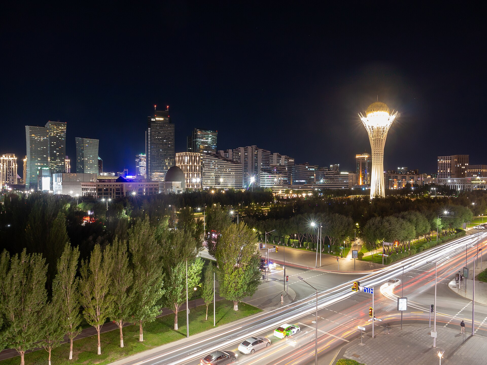

Токаев поддержал американское соглашение по ИИ «Вашингтонская модель» и предложил вывести его на уровень ООН
На совете по ИИ в Акорде 2 октября президент Казахстана поддержал добровольную «Вашингтонскую модель» и предложил сделать её основой международного договора под эгидой ООН. Страна представит инициативу на саммите G20.

2 октября на третьем заседании Совета по развитию искусственного интеллекта в Акорде президент Касым-Жомарт Токаев поддержал американское добровольное соглашение по управлению ИИ, известное как «Вашингтонская модель», и предложил сделать его основой международного договора под эгидой Организации Объединённых Наций.
Что такое «Вашингтонская модель»
Это добровольное соглашение о саморегулировании, представленное 29 сентября 2026 года президентом США Дональдом Трампом и руководителями крупных американских технологических компаний. Оно предусматривает внутренний контроль, независимую внешнюю оценку и надзор на уровне совета директоров. Токаев заявил, что модель может быть принята «всеми заинтересованными странами» и стать основой международного документа под эгидой ООН; Казахстан представит свою международную инициативу на саммите G20 в Майами в декабре 2026 года.
Программа Казахстана по ИИ
Национальный центр ИИ Alem.AI и первый суперкомпьютер страны (кластеры NVIDIA H200, до 2 экзафлопс) были запущены в июле 2025 года. С Nvidia и Firebird подписаны соглашения на сумму около 10 млрд долларов по созданию «Долины дата-центров» близ Экибастуза, где планируется до 100 000 GPU; первый объект мощностью 125 МВт должен заработать в 2027 году. Токаев поручил ориентировать Qazaq AI Research University на прикладные исследования. Объём промышленного производства в январе–августе составил 46 трлн тенге (около 102 млрд долларов).
Примечание
В Казахстане нет отдельного «министерства ИИ»; профильный орган — Министерство цифрового развития, инноваций и аэрокосмической промышленности. Точный список подписантов «Вашингтонской модели» приводится в основном по одному источнику (Times of Central Asia), поэтому здесь он обобщён как «крупные американские технологические компании».